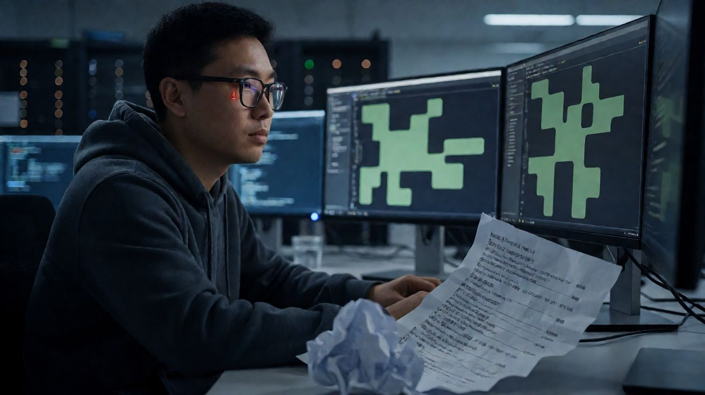

最近圈里不少IT管理者和老板都在琢磨一个怪现象：明明给团队配了AI助手，写脚本、查故障、出方案的速度确实翻倍了，可团队面对突发故障时的“手感”却变得稀碎了。以前遇到没见过的报错，工程师会先拆解逻辑再动手；现在直接丢给AI，答案秒出，看着挺完美，结果一落地就崩。
说白了，这背后藏着一个比效率下降更危险的陷阱。你在用AI“表现”优秀的同时，其实正在悄悄透支自己的“判断力”。
“流畅幻觉”与认知的惩罚效应

有个心理学现象，被很多技术团队忽视了。认知心理学领域（参考CEPR研究）揭开了一个残酷的数据：当人们过度依赖AI辅助，作业效率提升了18%，但独立解决新问题时的表现反而下降了20%，主动思考的时间还减少了30%。
在IT运维和开发场景里，这就是典型的“AI表现幻觉”。很多人误以为“流畅地生成答案”等于“真正掌握了问题”。我倾向于认为，人类的高级认知能力——特别是逻辑闭环构思、潜在风险预判、复杂系统整合判断——恰恰是在“挣扎”过程中长出来的。
当你习惯让AI直接给标准答案，你就跳过了最关键的“认知挣扎期”。这就好比健身，你让AI这个“外骨骼”帮你举铁，肌肉确实没累，但也没长大。
工具越顺手，人脑处理复杂抽象问题的能力就越容易生锈，这在认知科学里被称为“惩罚效应”。很多资深工程师感到越用AI越焦虑，并非技能真的退化了，而是他们潜意识里明白：一旦失去AI辅助，自己大概率已经无法从第一性原理去重建解决方案了。
执行可外包，决策必须人工兜底
那么，在AI时代，哪些认知劳动是安全的，哪些是必须死死抓住的底线？界线其实很清晰：执行层可以外包，决策层必须人工兜底。
AI擅长信息检索、格式化生成、重复性代码编写，这些本质上是“数字体力活”。但有三样东西，是AI模型里永远算不出来的变量，也是你建立职业护城河的核心：
1. **问题定义权**：“什么值得做”比“怎么做”更重要。AI很擅长解决明确的问题，但它判断不了你当前的业务痛点是否被正确定义。很多时候，技术人员花三天时间修了一个Bug，但业务方真正需要的是一个流程优化。这种对业务场景的深层洞察，依赖的是人的隐性知识。
2. **复杂系统整合判断**：AI能生成一份完美的服务器巡检报告模板，但它判断不了这台老旧设备在现场特定的散热环境、电源波动历史以及未来扩容计划下的实际风险。这需要人去过现场、摸过机器、看过历史日志。这种“现场直觉”无法被参数化。
3. **责任归属**：“出了问题谁负责”。在数字化转型中，责任不可算法化。如果AI给出的安全策略导致数据泄露，最终签字担责的依然是人类决策者。这种责任意识的压力，迫使人类必须保留最终的审核权和控制权。
建立“先挣扎，后求助”的双层校验流程
既然不能无脑依赖AI，正确的协作姿势是什么？建议建立“AI执行+人类审核”的双层校验流程，核心原则叫“先挣扎，后求助”。
具体落地可以分三步走：
第一步：人工构思框架（挣扎期）
在让AI动手前，人工必须先构思逻辑框架。明确要解决的核心矛盾是什么？边界条件有哪些？预期结果是什么？哪怕只是草稿，也要用自己的语言写出来。这个过程逼着你调用现有知识体系，暴露思维盲区。
第二步：AI填充细节（执行期）
将构思好的框架交给AI，让它去填充代码、生成文案或提供备选方案。此时AI是放大器，放大的是你的专业价值。
第三步：人工复盘修正（兜底期）
拿到AI的结果后，必须保留复盘环节。验证可行性：这段代码在特定硬件上能跑通吗？这个方案在合规上有没有坑？修正偏差：AI往往倾向于给出“平均化”的答案，你要根据自己的经验剔除那些看似完美但脱离实际的部分。
不要追求AI“一键搞定”，而要追求“人机互补”。把精力聚焦在需要现场判断、经验决策和责任承担的环节，才是AI时代IT人的生存之道。AI是杠杆，你用得好，撬动的是专业知识；用不好，撬动的就是能力空心化。
结语
这种“边干边学、边用边判”的落地细节，光说容易，做起来还得结合具体业务场景。如果公司里正为这事头疼，或者想搭建一套适合自家团队的人机协作流程，欢迎找我聊聊，帮你做个免费诊断，看看现场怎么落地更稳。
—— 文/南序先生｜辉旭为简工作室
官网：www.nanxu.vip | 邮箱：nanxu_hui@qq.com | 电话/微信：13576933022
--南序先生